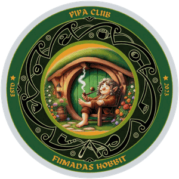

Gawith Hoggarth · Reino Unido
Broken Scotch Cake
- Hojas
- VirginiaBurley
- Notas de sabor
- FloralHenoNuezMiel
Broken Scotch Cake está compuesto principalmente por:
- Tabaco Virginia curado al humo (flue-cured) de tipo suave a medio.
- Tabaco curado al sol (sun-cured), que se añade para aportar un toque de dulzor y ayudar a que la fumada sea más fresca.
- Formato: Se presenta en un corte grueso o "roto" (broken flake / torta deshegada), lo que permite una combustión lenta, suave y uniforme. Tiene un sabor muy suave con matices herbáceos (grassy hay) y un acabado tostado.
Según las reseñas
FuerzaSuave1 de 1 voto
Muy suaveMuy fuerte
Intensidad de saborSuave a media1 de 1 voto
Muy suaveMuy intensa
AromatizanteNinguno1 de 1 voto
NingunoMuy fuerte
Nota de habitaciónAgradable1 de 1 voto
ImperceptibleMuy agradable
Reseñas
Todavía hay pocas reseñas para sacar medias (hacen falta 3).
Abre la ficha en el catálogo para escribir tu reseña o apuntarla en Mi bodega.
Última reseña
Mrlondonita

Caminante3 · Correcto16 nov 2026 · editada- Fuerza
- Suave
- Intensidad de sabor
- Suave a media
- Aromatizante
- Ninguno
- Nota de habitación
- Agradable
El Broken Scotch es una de las nuevas mezclas o reinvenciones de la casa Gawith. Está dentro de la gama de mezclas denominadas Scotch: es decir, con un sabor tirando a wisky. En este caso el sabor es amielado, un tanto cítrico y con notas muy livianas a licor y floral. No lo pondría como uno de los lakeland de la casa. Es un tabaco amable, tanto o más por no oler incisivo en la nota de habitación, pero no es uno de los tabacos más sabrosos de la casa. Un tabaco que se puede fumar muy a menudo.